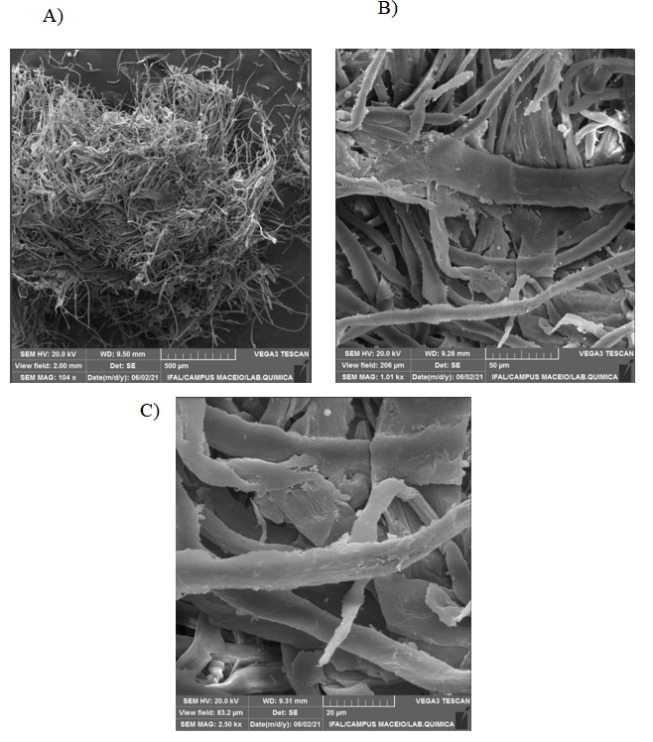

O Protótipo
Curativo feito a partir da taboca (bambu amazônico) processada para formar uma matriz flexível e biodegradável. Reforçado com nanopartículas de prata e nanoemulsão de óleos de copaíba e andiroba com ação antisséptica e anti-inflamatória.
- 100% biodegradável e livre de petrolatos
- Dosagem controlada de nanopartículas de prata
- Nanoemulsão com liberação prolongada
Pesquisa & Estudos
Conduzimos estudos de propriedades materiais da taboca, incorporação e caracterização de nanopartículas de prata, desenvolvimento de nanoemulsões de óleos amazônicos e testes de solubilidade/biodegradabilidade.

Microscopia eletrônica — nanopartículas de prata

Suspensão aquosa de nanopartículas preparada pela equipe

Microscopia eletrônica da celulose de taboca (IFAL)
Principais etapas
- Processamento e caracterização da matriz de taboca;
- Síntese e caracterização de nanopartículas de prata;
- Formulação de nanoemulsão de óleos;
- Testes de solubilidade e biodegradabilidade.
Publicações & Referências
- ABDULKHALEQ L. A. et al. The crucial roles of inflammatory mediators in inflammation. Veterinary World, 2018.
- ABDELHAMID, H. N.; MATHEW, A. P. Cellulose-Based Nanomaterials Advance Biomedicine. Int. J. Mol. Sci., 2022.
- ANTUNES-NETO, J. M. F.; SILVA, L. P.; MACEDO, D. V. Biomarcadores de estresse oxidativo. Rev. Bras. Ciência Mov, 2005.
- CASAO, T. R L. et al. Croton urucurana ointment accelerates wound closure. J. Ethnopharmacol., 2020.
- COSTA, M. A. R. et al. Total phenolics, total flavonoids and antioxidant activity. Enciclopédia Biosfera, 2017.